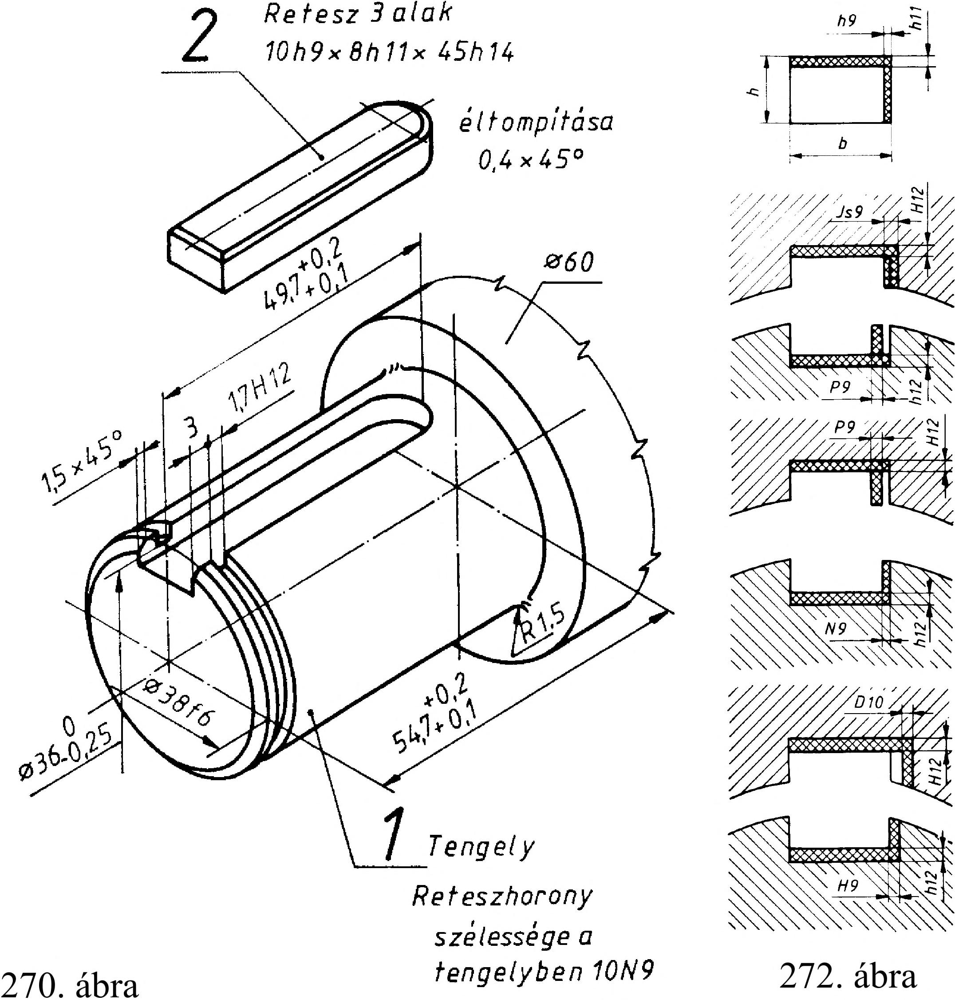

16. Reteszek, reteszkötések 16. Reteszek, reteszkötések 16.1. Reteszek A reteszek abban különböznek az ékektől, hogy a reteszeknek nincs lejtésük, vagyis alsó és felső felületük párhuzamos (270. ábra). Alkalmazásuk előnye, hogy sem az agyban, sem a tengelyben nem keltenek sugárirányú nyomófeszültséget. így a forgó alkatrész és a tengely egytengelyűsége biztosítható. A reteszek csak a nyíró igénybevételükkel, ill. az oldalfelületeiken adják át a nyomatékből adódó kerületi erőt. Nagy nyomatékok átvitelére alkalmasak, de a tengelyen az alkatrészt tengelyirányú elmozdulás ellen biztosítani kell vagy valamilyen mechanikai rögzítőelemmel vagy megfelelően szoros illesztéssel. A reteszek fajtáit, alakját és szabványos méreteit az 21. táblázat tartalmazza. A fészkes retesz szemléltető kéne 271. ábra l.alak -1* -I *\A, 273. ábra 2. alak 3. alak A- A — 1* ~T , -i4 sx45° 16.2. Reteszkötések és ábrázolásuk A szabványos retesz 1. alak - fészkes , 2. alak -hornyos és a 3. alak -félhornyos ipari gyakorlati megnevezéssel ismert (273. ábra). A fészkes retesz számára a horony ujjmaróval készül. Szemléltető képe AutoCAD szerkesztőprogrammal készült szilárdtest, amely az 271. ábrán látható. A hornyos retesz számára a tengelybe a reteszhomyot tárcsamaróval marjuk A reteszkötések kialakításához szükséges reteszhorony méreteit és tűréseit az 22. táblázat tartalmazza. A siklóreteszt ott alkalmazzuk, ahol a tengelyen az agyat el kell csúsztatni (pl. váltómű fogaskerekekhez). A retesz méreteitől függően egy vagy két hengeres fejű csavarral a tengely fészkében rögzíteni kell (274. ábra). A reteszkötésekhez használatos illesztések grafikus ábrázolását a 272. ábra szemlélteti. Az íves reteszt kisebb nyomaték és rövid kerékagy esetén alkalmazzuk (275. ábra). A tengelybe a hornyot tárcsamaróval marjuk (276. ábra). 274. ábra 275. ábra vf z -I hi = 0,8h sx4-5° vagy R 276. ábra 77
